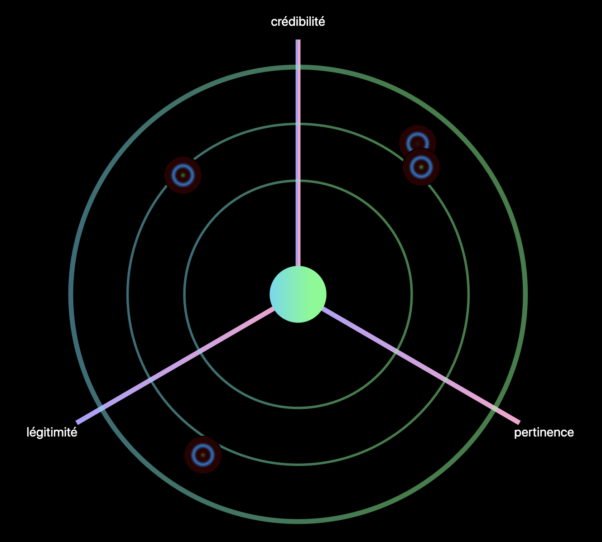

5 Rappel des résultats
5.0.1 L’analogie écosystèmique
« Les scientifiques ne se contentent pas de lire le grand livre de la Nature ; ils le déchiffrent, le décodent, le transcrivent, le traduisent en une foule d’énoncés inscrits dans des argumentations qui se coulent dans des récits. Mettre l’univers en mots est la tâche essentielle du scientifique. » § 35 Callon 2013
5.0.1.1 Tissage des connaissances
« c’est aux scientifiques et à eux seuls que revient l’écrasante tâche d’organiser le dialogue avec la Nature en tissant inlassablement le filet des énoncés pour en resserrer la maille » § 37 Callon 2013
5.0.2 Modèle pour une ontologie – éthique
“Une théorie des modèles (comme l’est la théorie des catastrophes) sera un générateur de modèles qualitatifs, tout comme une loi physique est génératrice de modèles quantitatifs.” (Thom, 1975) p. 372
“Il ne fait aucun doute qu’une telle théorie générale des ‘Gestalten’, une ‘Morphologie Générale’, ne serait d’un intêret épistémologique fondamental.” (Thom, 1975) p. 372
5.0.2.1 Expérimentation des connaissances par l’existence des affects
L’ensemble de l’opération décrite par Spinoza présente quatre moments : 1°) joie passive qui augmente notre puissance d’agir, d’où découlent des désirs ou des passions, en fonction d’une idée encore inadéquate ; 2°) a la faveur de ces passions joyeuses, formation d’une notion commune (idée adéquate) ; 3°) Joie active, qui suit de cette notion commune et qui s’explique par notre puissance d’agir ; 4°) Cette joie active s’ajoute à la joie passive, mais remplace les désirs-passions qui naissaient de celle-ci pas des désirs qui appartiennent à la raison, et qui sont de véritables actions. Ainsi se réalise le programme de Spinoza : non pas supprimer toute passion, mais à la faveur de la passion joyeuse, faire que les passions n’occupent plus que la plus petite partie de nous-même et que notre pouvoir d’être affecté soit rempli par un maximum d’affections actives.” (Deleuze, 1968, p. 264)
5.0.2.2 Pouvoirs de discernement, de choisir et d’agir
5.0.3 La complexité existentielle1
Nous reprenons ici les chapitres consacrées à cette problématique que nous avons publié en anglais dans (Szoniecky, 2018) en les corrigeant et les complétant de nouvelles propositions.
A partir des principes de modélisation que nous avons définis (1.5.2 Modèle pour une ontologie – éthique p. 51, il est possible de calculer la complexité d’un écosystème de connaissances suivant des règles génériques qui s’appliquent quels que soient les éléments qui compose l’écosystème concernés. La comparaison entre ces écosystèmes devient dès lors possible afin d’évaluer leurs étendues dans les connaissances et le degrés de précision de celles ci. Insistons toutefois sur le caractère relatif de ces modélisations et des mesures de complexité qui en découlent. Il est illusoire de défendre l’idée que la modélisation puisse être exhaustive, elle relève toujours de la subjectivité de l’analyse qui choisi d’intégrer tel ou tel élément dans le modèle. Dès lors, ce qui est important c’est de pouvoir évaluer la complexité du modèle et de créer les conditions de son interopérabilité et de sa réfutabilité.
5.0.3.1 Calculer la complexité existentielle
La complexité d’un écosystème de connaissances est calculée à partir des existences informationnelles qui le composent en faisant la somme de ces existences et des éléments qui composent ses quatre dimensions : physique, acteur, concept et rapport. Suivant le principe de modélisation fractale que nous appliquons, les éléments de chaque dimension se composent eux-même d’existences informationnelles bâties sur le même modèle à quatre dimension. De ce fait, la complexité d’une existence augmente suivant la complexité des éléments qui la compose. Une simple somme des éléments qui composent l’écosystème n’est donc pas suffisante pour exprimer sa complexité puisqu’elle n’indique pas par exemple les niveaux de modélisation entre élément et sous partie qui la compose. De ce fait, Le calcul de la complexité existentielle doit être pondéré par les niveaux de modélisation de chaque élément. Par exemple, la modélisation de l’existence informationnelle de notre planète par la seule dimension conceptuelle « Terre » est bien moins moins complexe qu’une modélisation de cette existence qui inclus l’ensemble des existences « continents » qui la compose. Pour calculer cette différence de complexité, nous proposons de multiplier le nombre d’élément de chaque dimension par le niveau de modélisation. Dans le cas d’une modélisation « Terre », nous obtenons la complexité : 1
« Terre » : niveau 1 : 1 élément => complexité = 1 * 1 = 1
Si nous ajoutons à cette modélisation les « continents », nous obtenons la complexité 1+14 = 15 :
« Terre » : niveau 1 : 1 élément => complexité = 1 * 1 = 1
+
« Afrique », « Amérique du nord », « Amérique du sud », « Antartique », « Artique », « Asie », « Europe » : niveau 2 : 7 éléments => complexité = 2 * 7 = 14
Pour faciliter ces calculs, nous avons développer un algorithme pour Omeka S2 qui utilise les informations de la base de données pour calculer la complexité d’une ou de plusieurs existences suivant le principe qu’une ressource Omeka S est une existence. Cette algorithme se compose de deux parties, une première qui calcule pour une ressource le nombre d’élément de chaque dimension et une deuxième qui calcule la complexité à partir de ce dénombrement.
L’étape du dénombrement calcule pour chaque ressource le nombre d’élément de la dimension existentielle correspondant à la classe3 de cette ressource. Puis incrémente le nombre d’actant pour chaque propriétaire (« owner ») de la ressource. Pour chaque propriété qui décrit cette ressource, l’algorithme incrémente premièrement le nombre de concept (une propriété est définie par une « rdf:Property » dans un vocabulaire spécifique) ; deuxièmement le nombre d’élément physique pour chaque valeur de la propriété puisque dans Omeka S, la propriété d’une ressource a une cardinalité 0-n. Dans le cas où une valeur de propriété est une relation vers une autre ressource, le calcul de complexité s’applique récursivement à cette ressource en augmentant le niveau de modélisation dans la limite de n+1 niveau (pour une explication de ce choix cf. 1.5.3.3 Différence entre complexité et maillage du réseau p. 55). Parallèlement au comptage des éléments des dimensions physique, actant et concept, l’algorithme incrémente la dimension des rapports en suivant le modèle logique sujet, objet, prédicat dont nous avons montrer l’intérêt pour un processus de modélisation dans (Szoniecky, 2020) et que nous détaillons plus loin (1.5.4 Diagrammes et cribles conceptuels p. 55). Dans le cas de cet algorithme, les valeurs des sujets, objets et prédicats sont définies avec les règles suivantes :
Pour chaque ressource :
sujet = dimension existentielle de la ressource, objet = Concept, prédicat = properties, nombre de rapport = nombre de propriété
sujet = dimension existentielle de la ressource, objet = Physique, prédicat = values, nombre de rapport = nombre de valeur pour l’ensemble des propriétés de la ressources
Pour chaque propriétaire
- sujet = dimension existentielle de la ressource, objet = Actant, prédicat = owner, nombre de rapport = 1
Pour chaque valeur de type ressource
- sujet = dimension existentielle de la ressource, objet = dimension existentielle de la valeur, prédicat = propriété de cette valeur, nombre de rapport = 1
Pour chaque valeur de type URI
- sujet = dimension existentielle de la ressource, objet = Physique, prédicat = uri, nombre de rapport = 1
Suite à cette étape de dénombrement, la deuxième partie de l’algorithme consiste à multiplier pour chaque ressource le nombre d’élément de chaque dimension existentielle par le niveau de la ressource dans le processus de modélisation. Puis de cumuler les résultats pour obtenir la complexité d’un ensemble de ressource. Au final le calcul de la complexité produit l’objet avec les propriétés suivantes :
infos
date : date du calcul de la complexité
resources4 : liste des ressources impliquée dans le calcul avec les informations :
- type : le type de ressource omeka S = items, item set, media, annotations
- id : l’identifiant
- title : le titre
- class : la classe
- complexity : la complexité calculée
- d : la dimension existentielle = Physique, Actant, Concept, Rapport
- n : les niveaux de modélisation pris en compte pour cette ressource
- details5
params : affiche les paramètres passés à l’algorithme
Pour les dimensions Physique, Actant, Concept : résultats du calcul pour la dimension avec les informations :
details : liste les niveaux de modélisation, avec le nombre d’élément et la complexité du niveau
totals : affiche le résultat total de la dimension :
- nbNiv : le nombre de niveau de modélisation qui dans cette version de l’algorithme est toujours égal à 2
- nivMin : le niveau minimum de modélisation de la dimension : 1 ou 2
- nivMax : le niveau maximum de modélisation de la dimension : 2
- nb : le nombre d’élément dans la dimension
- c : la complexité de cette dimension
Pour la dimension Rapport : résultats du calcul pour la dimension avec les informations :
details : liste des rapports avec les informations :
- ns : niveau de modélisation du sujet
- no : niveau de modélisation de l’objet
- s : dimension existentielle du sujet
- o : dimension existentielle de l’objet
- p : prédicat du rapport
- nb : nombre de rapport ayant les mêmes ns, no, s, o, p
- c : complexité du niveau
totals : affiche le résultat total de la dimension :
- nbNiv : le nombre de niveau de modélisation qui dans cette version de l’algorithme est toujours égal à 2
- nivMin : le niveau minimum de modélisation de la dimension : 1 ou 2
- nivMax : le niveau maximum de modélisation de la dimension : 2
- nb : le nombre d’élément dans la dimension
- c : la complexité de cette dimension
totals : affiche le résultat totaux des ressources calculées :
- nbNiv : le nombre de niveau de modélisation qui dans cette version de l’algorithme est toujours égal à 2
- nivMin : le niveau minimum de modélisation : 1 ou 2
- nivMax : le niveau maximum de modélisation : 2
- nb : le nombre d’élément
- c : la complexité
Les données fournies par l’algorithme permettent de vérifier les calculs et de les utiliser pour faire d’autres traitements par exemple pour les représenter graphiquement et naviguer dans les résultats.
5.0.3.2 Représenter la complexité existentielle
Afin de rendre plus explicite, la complexité d’un écosystème de connaissance et des existences qui le peuplent, nous avons conçu et développé une application de visualisation et de manipulation des calculs de complexité existentielle.
Par exemple, reprenons la modélisation de la Figure 4.2., Chromecast est considéré comme une dimension physique composé de trois sous partie : le cordon d’alimentation, le boitier électronique et le câble HDMI. Cette modélisation ne prend pas en compte les dimensions d’acteur, de concept et de rapport. Ce modèle a une complexité de 7 que nous détaillons dans le tableau ci-dessous :
5.0.3.3 Différence entre complexité et maillage du réseau
Il est important de comprendre que le calcul de la complexité d’une existence ne prend pas en compte l’intégralité du réseau informationnel dont fait partie cette existence mais uniquement . Nous avons fait le choix pour simplifier lecalcule dea complexité d’une existence mais uniquement les informations
Par exemple, la citation suivante possède une complexité de 231 dans notre écosystème de connaissance :
« le tout est d’une certaine façon inclus (engrammé) dans la partie qui est incluse dans le tout. L’organisation complexe du tout (holos) nécessité l’inscription (engramme) du tout (hologramme) en chacune de ses parties pourtant singulières ; ainsi, la complexité organisationnelle du tout nécessite la complexité organisationnelle des parties, laquelle nécessite récursivement la complexité organisationnelle du tout. » (Morin 1992, 102)
Cette complexité peut se représenter par le diagramme suivant :

5.0.3.4 Comparer des points de vue interprétatif
les dimensions existentielle,
le temps,
par rapport à un objectif
5.0.4 Diagrammes et cribles conceptuels
« Très souvent les marques involontaires sont beaucoup plus profondément suggestives que les autres, et c’est à ce moment-là que vous sentez que toute espèce de chose peut arriver. » (Voss, 2019, § 16) Cité dans (Deleuze, 2002, p. 94, note de la p. 87).
“Le diagramme, pour ainsi dire, provoque d’abord le désordre et le chaos, en jetant pêle-mêle un régime significatif déjà existant, un ordre sémantico-syntaxique et une organisation optique, pour en tirer une clarté et une précision nouvelles. Cette clarté et cette précision n’appartiennent toutefois pas à une logique de représentation avec ses catégories d’identité, de ressemblance, d’analogie et d’opposition, mais à une « logique de la sensation ».” (Voss, 2019, § 21)
« L’arbre n’est pas seulement un signe, il est le signe des signes, le diagramme des diagrammes, celui qui est le mieux en prise avec le réel et son devenir. Qu’il s’incarne dans des images matérielles, des images mentales ou des images métaphoriques, il affirme sa puissance organisatrice dans tous les domaines depuis les débuts de la pensée moderne jusqu’à l’ère numérique. » (Dahan-Gaida, 2020)§ 37
Les plateaux sont des multiplicités qui s’interconnectent par des ramifications rhizomatiques, qui posent que l’écrit n’est plus un signifié, mais un arpentage et une cartographie. C’est l’objet de la philosophie que de construire des réseaux qui relient les idées et produisent les concepts. De là, l’importance des lieux synaptiques qui sont à la charnière des strates et des couches géologiques, des niveaux et des plans que composent le savoir et le monde. Les surfaces sont toujours entaillées de modifications de reliefs que le rhizome restitue. L’Être n’est plus l’Être en tant qu’Être mais l’Être en tant qu’Être en un lieu. Le topos est le plan d’immanence sur lequel se développe la réflexion sur la philosophie des sciences. L’ontologie se mue en une onto-(po)-logie ou ontologie toposique. p. 156
Jedrzejewski, F., 2007. Diagrammes et Catégories (Philosophie). Université Paris-Diderot - Paris VII, Paris.
Ces cribles auront pour objectif Avant d’utiliser ce crible conceptuel, il faut tout d’abord définir « sur quoi » porte l’analyse qu’elle est sont objet qu’elles sont les « potentialités actuelles dûment répertoriables » . Dans l’étude de (Wolff & al. 2017) la grille d’analyse CPL porte sur des plateformes informatiques mais nous pouvons aussi l’utiliser sur toutes autres données voir même sur CPL.
Pour illustrer notre propos nous prendrons l’exemple des plateformes pour mesurer et préserver la biodiversité. Afin de répondre aux obligations légales des entreprises qui depuis la loi sur les « Nouvelles Régulations économiques » de 2002, doivent informer sur « les mesures prises pour préserver ou développer la biodiversité » (décret n° 2012-557). De nombreuses plateformes sont apparues pour aider les entreprises à respecter la loi, toutefois l’usage de ces outils pose de nombreuses questions notamment concernant :
« d’une part la question des hypothèses sur lesquelles reposent ces outils, qui peuvent être contestables scientifiquement ou socialement du fait du système de valeurs sur lequel ils s’appuient, et d’autre part la question de leur efficacité en termes de modification des représentations de l’environnement et, in fine, d’une meilleure prise en compte des questions environnementales dans les décisions. » (Wolff & al. 2017)
Les problèmes relèvent principalement du « système du valeur » qui sous-tend la conception des plateformes et influent sur la production des données. Pour évaluer ces plateformes (Wolff & al. 2017) ont utilisé un crible conceptuel pour mesurer la qualité des données sur trois aspects : la crédibilité, la pertinence et la légitimité (CPL). Leur étude s’appuie sur une méthode d’évaluation robuste qui révèlent les stratégies des acteurs de l’entreprise face à la préservation de l’environnement. Cette méthode offre un radar conceptuel pour positionner trois exigences fortes, complémentaires et indispensables à la conception d’un outil d’évaluation des impacts environnementaux de l’activité. Plus globalement, il offre un moyen simple permettant à chacun de positionner un point de vue par rapport à une données environnementale.
comme la grille CPL. Le diagramme ci-dessous (Figure 1), illustre comment utiliser ce crible conceptuel dans une carte sémantique où chacun pourra par un simple clic situer son point de vue :
Figure 1. Crible conceptuel CPL
La Figure 1 ci-dessus montre le résultat de plusieurs positionnements. L’application pour téléphone mobile avec laquelle sont fait ces positionnements, enregistre des données sur : quand, où et qui.
Les données de positionnement spatiales et temporelles ne posent pas de problème particulier au niveau de leur objectivité car sauf erreur de la machine ou malveillance, elles font références à des normes de mesure, celles du GPS pour le « où » et celles des horloges mondiales pour le « quand ».
5.0.4.1 Exemples de cribles conceptuels
5.0.4.1.1 Qualification du réel
«
- Le singulier : ce que l’on rencontre est un événement, une rupture par rapport à ce qui existait avant, et est proprement incomparable à tout ce qui l’entoure et ce que nous connaissons. Le singulier est un absolu, il impose à nous sa singularité. Répondre à ce singulier force à innover, à l’intégrer dans notre réalité alors qu’il la déborde.
- Le récurrent : ce que l’on rencontre a déjà eu lieu ; contrairement au singulier, le récurrent passe quasiment inaperçu, il ne fait pas événement mais conditionnement, il est à la source de nos habitudes.
- Le typique : le réel se manifeste à travers un objet ou une situation qui incarne selon nous un comportement à adopter. Le typique renvoie au lieu commun : quand on rencontre tel ou tel objet, on ne se pose pas de question, on agit de telle ou telle manière.
- Le particulier : le réel se manifeste comme le spécifique d’une règle ou catégorie générale. La réponse adoptée est celle qui est commandée par la catégorie qui le subsume.
- Enfin, l’instance est le réel correspondant à un type formel, ce qui se laisse enrôler dans un axiome ou une règle calculatoire ou logique. C’est le niveau des définitions implicites de Hilbert : on ne sait pas ce qu’est un ensemble, c’est ce qui se comporte comme les axiomes de Zermelo – Fraenkel avec l’axiome du choix (ZFC) ; de même on ne sait pas ce qu’est un nombre entier, mais c’est ce qui se comporte selon les axiomes de Peano. Dans cette optique, traiter ce qui arrive comme un instance revient à lui appliquer les règles ou axiomes régissant son comportement. » https://intelligibilite-numerique.numerev.com/manifeste
5.0.4.1.2 Les valeurs selon Gabriel Tarde
Pour être plus précis et en adéquation avec les propositions qu’Yves Citton avancent pour réaliser une cartographie des affects à partir des principes de Spinoza et Tarde (Citton, 2008) nous remplaçons l’unique concept de confiance par un crible conceptuel (1.1.4Espaces conceptuels : connaissances des essences p. 26) qui décompose la valeur en trois registres :
- les « valeurs-utilités » qui définissent l’offre et la demande
- les « valeurs-vérités » qui mesurent les gains en connaissances et plus largement les phénomènes de croyances, de confiance, les attentes
- les « valeurs-beautés » qui définissent le champ esthétique au sens de tout ce qui transforme nos goûts et nos sensibilités.
5.0.5 Interaction par cartographie sémantique
(repris de Szoniecky & Toumia 2019)
C’est à partir de cette traduction analogique que nous proposons une représentation dynamique et interactive du pouvoir d’agir sous forme de cartographie sémantique que nous définissons comme des interfaces dynamiques et interactives composées :
• d’un système de coordonnées conceptuelles pour formaliser une expression interopérable
• d’une projection des concepts dans un vocabulaire graphique pour visualiser des expressions
• de dispositifs d’interactions avec l’utilisateur (click, drag & drop, capture de gestes, etc.) pour manipuler des expressions
Ces cartographies prennent comme vocabulaires graphiques ceux des cartographies géographiques, des plans d’habitations ou toute autre forme graphique comme des étoiles, des icônes, des dessins, des schémas, etc. Ce qui importe c’est la capacité de la cartographie de rendre explicite, affordant, les interactions des utilisateurs avec le vocabulaire graphique et la projection de ces interactions dans quatre systèmes de coordonnées :
• espaces matériels
• espaces conceptuels
• réseaux d’acteurs
• temporalités.
Le passage par ces systèmes de coordonnés permet de formaliser l’expression pour la rendre interopérable avec d’autres expressions. Ainsi l’interprétation passe par le positionnement de l’utilisateur dans ces quatre systèmes de coordonnées. Positions que l’on peut calculer automatiquement par exemple dans l’espace matériel grâce au GPS ou dans la temporalité́ grâce à la synchronisation des horloges mondiales. En revanche, les positionnements dans le réseau des acteurs et dans les espaces conceptuels nécessitent des interactions avec l’utilisateur.
5.0.6 Conception de prototypes pour les humanités numériques
Concevoir des outils est un travail long qui demande de bien comprendre les usages particuliers d’un domaine pour en extraire une généricité opératoire dont l’outil sera la mise en forme. Mais cette capacité à formaliser dans un artefact une solution pour améliorer une activité ne suffit pas à faire un outil, il faut aussi comme la bien montré Leroi Gourhan que cette forme soit adoptée par une communauté d’utilisateur et cela même si la solution proposée n’est pas la plus adéquate :
↩︎Nous ne présenterons pas ici les relations de ce travail avec les recherches en informatique théorique sur la complexité algorithmique (Perrot, 2022)
↩︎Cette algorithme est utilisable directement avec une API pour un petit nombre d’élément ou avec un « Writer » pour le module Bulk Export développé par Daniel Bertherau (https://gitlab.com/Daniel-KM/Omeka-S-module-BulkExport). Le code de l’algorithme est disponible ici : https://github.com/samszo/Omeka-S-module-JDC/blob/master/src/View/Helper/JDCViewHelper.php#L169
le writer ici :https://github.com/samszo/Omeka-S-module-JDC/blob/master/src/Writer/AbstractComplexityWriter.php
↩︎La liste des correspondance est disponible ici : https://github.com/samszo/Omeka-S-module-JDC/blob/master/src/View/Helper/JDCViewHelper.php#L39
↩︎Cette information n’est présente que dans les calculs via l’API mais pas avec le module Export
↩︎Cette information n’est présente que pour les ressource de niveau 1 dans les calculs via l’API mais pas avec le module Export